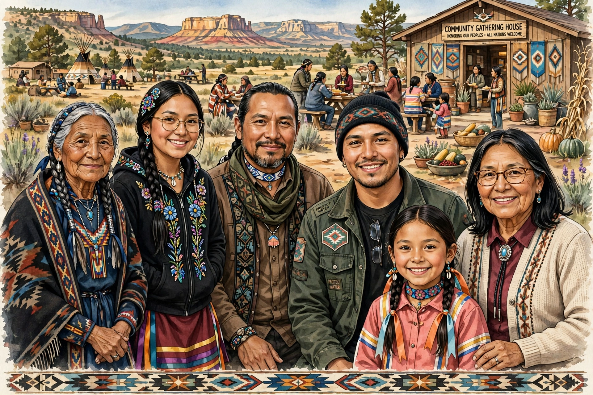

Native Americans, also called American Indians or Indigenous Americans, are the Indigenous peoples of the continental United States, including Alaska Natives; Native Hawaiians are usually treated separately.

Native AmericansIndigenous peoples have inhabited the Americas for at least 15,000 years, developing diverse societies — Pueblo, Mississippian, Iroquois Confederacy and many others. European colonisation from the 16th century brought disease, warfare, displacement (Indian Removal, Trail of Tears), broken treaties and reservation confinement; populations collapsed but survived.
Tribal nations retain inherent sovereignty; federal recognition, self-determination policy since the 1970s, gaming (Indian Gaming Regulatory Act 1988) and cultural revitalisation shape modern life. Issues include land rights, missing and murdered Indigenous women, health and language loss. See Trail of Tears, Tribal sovereignty.